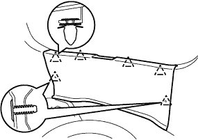

クォータ ウインドウASSY RH 取り外し |
| 1. リヤシートバックASSY取りはずし |
リヤシートバツクを前倒位置にする。
 |
ボルト2本取り付け部のクリップをはずす。
 |
リヤシートバツクカバーをめくりボルト2本をはずし、リヤシートバツクASSYを取りはずす。
| 2. リヤシートクッションASSY取りはずし |
前部のロックのレバーを図の矢印の方向に押してかん合をはずす。
リヤシートベルトを、リヤシートクッションカバー & パッド後部のゴムバンドに通す。
 |
リヤシートクッションASSY後部のフックのかん合をはずし、リヤシートクッションASSYを取りはずす。
| 3. リヤシートバック ヒンジSUB-ASSY RH取りはずし |
 |
ボルトをはずし、リヤシート バツク ヒンジ RHを取りはずす。
| 4. リヤシートバックASSY RH取りはずし |
| 5. リヤシートバックASSY LH取りはずし |
リヤシートバツクを前倒位置にする。
 |
ボルト2本取り付け部のクリップをはずす。
|
リヤシートバツクカバー下部をめくりボルト2本をはずし、リヤシートバツクを取りはずす。
| 6. リヤシートクッションASSY取りはずし |
リヤシートクッションASSY前側をリヤシート クッション ロック ストライカにロックさせる。
 |
リヤシートバックヒンジRHよりスナップリングを取りはずす。
リヤシートクッションASSY右側ブラケットの、リヤシートヒンジRHを引き抜いて取りはずす。
 |
ボルトをはずし、リヤシ－トヒンジLHを取りはずす。
リヤシートクッションASSYのリヤシート フックASSY RHを引き、リヤシートクッションASSY前部のかん合をはずす。
リヤシートベルトを、リヤシートクッションカバー & パッド後部のゴムバンドに通す。
リヤシートクッションASSYを取りはずす。
| 7. フロントドアスカッフ プレート RH取りはずし |
 |
手で上方に引いてツメのかん合をはずし、フロントドアスカツフプレートＲＨを取りはずす。
| 8. カウルサイドトリム ボード RH取りはずし |
 |
ツメのかん合をはずし、カウルサイドトリムボードを取りはずす。
| 9. フロントドア オープニングトリム ウェザストリップ RH取りはずし |
| 10. バックドア ウエザストリップ取りはずし |
| 11. リヤフロア カーペット取りはずし |
| 12. スペアホイール カバーASSY取りはずし |
| 13. バックドアスカッフ プレート取りはずし |
|  |
クリップ2個を取りはずす。
トリムカバー端部より手で上方に引き、クリップのかん合をはずしてバツクドアスカツフプレートを取りはずす。
| 14. ラップベルト アウタアンカ カバー取りはずし |
 |
ツメのかん合をはずし、ラップベルト アウタアンカ カバーを取りはずす。
| 15. フロントシート アウタベルトASSY RH取りはずし（フロアアンカ部） |
ボルトをはずし、フロントシート アウタベルトASSY RH（フロアアンカ部）を取りはずす。
| 16. リヤシート 3ポイントタイプ ベルトASSY OUT RH取りはずし（フロアアンカ部） |
ボルトをはずし、リヤシート 3ポイントタイプ ベルトASSY OUT RH（フロアアンカ部）を取りはずす。
| 17. サイドNO.1 トリムASSY RH取りはずし |
 |
手で車両内側方向に引いて、クリップおよびツメのかん合をはずし、サイドN o.1トリムASSY RHを取りはずす。
| 18. デッキトリムサイド パネルASSY RH取りはずし |
 |
クリップおよびツメのかん合を取りはずし、デツキトリムサイドパネルASSY RHを取りはずす。
| 19. ルーフサイド ガーニッシュ INN RH取りはずし |
 |
ガーニッシユを手で車両内側方向に引いて、クリップのかん合をはずし、ルーフサイドインナガーニッシュRHを取りはずす。
| 20. シート ベルト アンカ カバー キャップ取りはずし |
 |
保護テープを貼った薄刃マイナスドライバーを使用してツメのかん合をはずしボルトをはずし、シート ベルト アンカ カバー キャップを取りはずす。
| 21. フロントシート アウタベルトASSY RH取りはずし |
ボルトをはずし、フロントシート アウタベルトASSY RH(ショルダアンカ部)を取りはずす。
 |
保護テープを貼った薄刃マイナスドライバーを使用してツメのかん合をはずし、ロッキングボタンを手前に引き出しロックを解除する。
コネクタ(プリテンショナ用)を切り離す。
ボルト2本をはずし、フロントシート アウタベルトASSY RHを取りはずす。
| 22. センタピラー ガーニッシュ RH取りはずし |
 |
ガーニツシユを手で車両内側方向に引いて、クリップのかん合をはずし、センタピラーガーニッシュRHを取りはずす。
| 23. クォータ ウインドウASSY RH取りはずし |
 |
コネクタを切り離す。
吸引ゴムをガラスに取り付ける。
ガラス外周のボデー面および室内側に保護テープを貼る。
接着部に石けん水を十分に塗布する。
 |
接着部にウインドシールドナイフを差し込む。
刃先とガラス端部を直角に保持しながら、ウインドシールドナイフの刃をガラス面および端部にあわせるようにしてガラス端部と平行に引いて切り離す。
 |
図のようにピアノ線(0.6ｍｍが適当)を通し、両端をマイティプラーに取り付ける。
ピアノ線を交互に引いてピンを残し接着部を切断する。
室内側からプライヤーなどで一部ピンのかん合をはずす。
吸引ゴムを持ってピンのかん合をはずし、クォータウインドゥガラスＲＨを取りはずす。